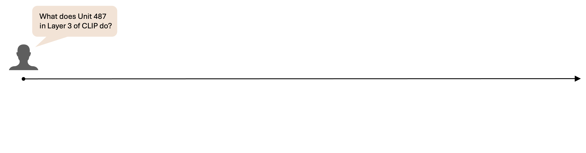
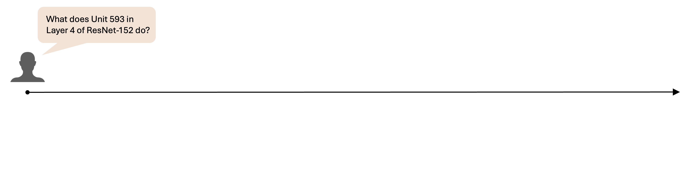
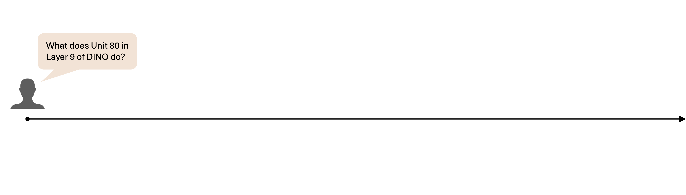

MAIA Tools
MAIA composes interpretability subroutines into python programs to answer user queries about a system. What kind of experiments does MAIA design? Below we highlight example usage of individual tools to run experiments on neurons inside common vision architectures (CLIP, ResNet, DINO). These are experimental excerpts intended to demonstrate tool use (often, MAIA runs many more experiments to reach its final conclusion!) For full experiment logs, check out our interactive [neuron viewer].
Visualizing Dataset Exemplars
MAIA uses the dataset_exemplars tool to compute images from the ImageNet dataset that maixmally activate a given system (in this case, an individual neuron). The dataset_exemplars tool returns masked versions of the images highlighting image subregions that maximally activate the neuron, as well as the activation value.

Generating Synthetic Test Images
In addition to using real-world stimuli as inputs to the system it is trying to interpret, MAIA can generate additional synthetic inputs that test specific dimensions of a system's selectivity. MAIA uses the text_to_image function to call a pretrained text-guided diffusion model on prompts it writes. These prompts can test specific hypotheses about the neuron's selectivities, such as in the example of the tennis ball neuron below.

Image editing
Maia can also call the edit_images tool which uses an text-based image editing module (Instruct Pix2Pix) to make image edits according to prompts written by MAIA. MAIA uses this tool to causally intervene on input space in order to test specific hypotheses about system behavior (e.g. whether the presence of a certain feature is required for the observed behavior!)
